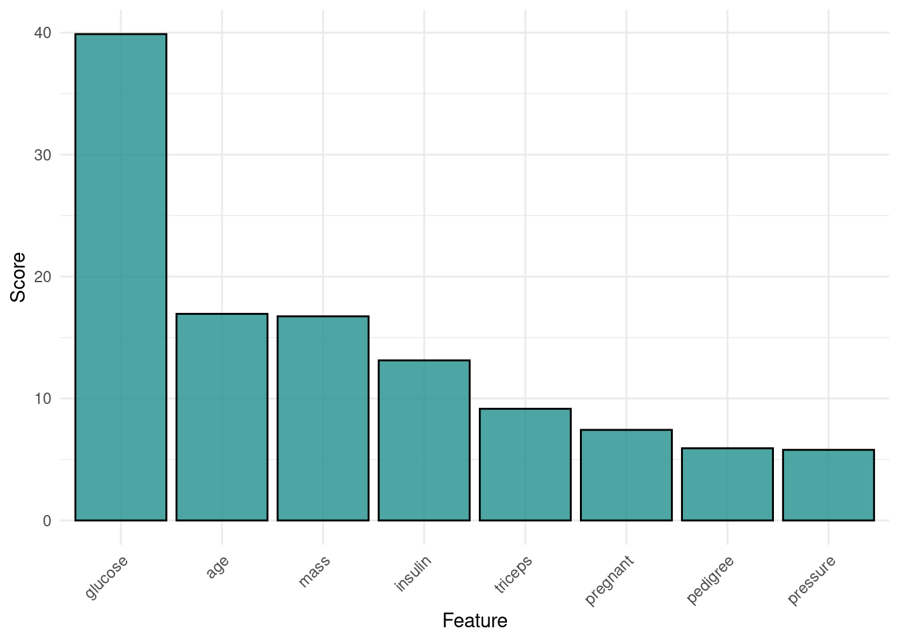

library("mlr3verse")Loading required package: mlr3# retrieve a task
task = tsk("pima")
# retrieve a filter
filter = flt("kruskal_test")
# calculate scores
filter$calculate(task)
# access scores
filter$scores glucose age mass insulin triceps pregnant pedigree pressure
39.885381 16.942901 16.740864 13.127828 9.158113 7.426955 5.922431 5.788607 # plot scores
autoplot(filter)
# subset task to 3 most important features
task$select(head(names(filter$scores), 3))
task$feature_names[1] "age" "glucose" "mass"